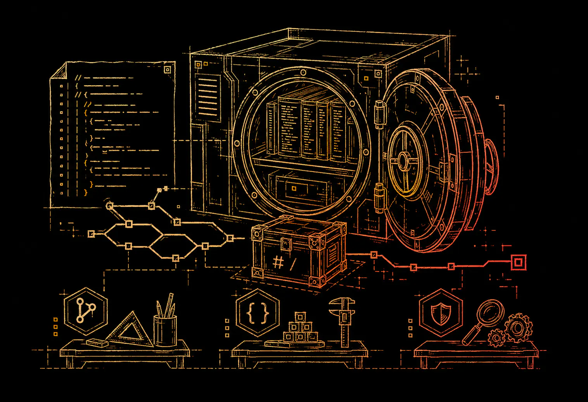

Install paths matter
Automic Vault keeps production installs under controlled roots and exposes stable command stubs for agent-used tools.


Founder authority
Automic Vault secures Homebrew tools, CLI secrets, and command approval gates locally on your Mac before AI agents use them.
Last updated: June 3, 2026

Who builds it
Homebrew became the default way many macOS developers install command-line tools. Automic Vault comes from the same operating reality: developer machines are full of useful tools, and those tools need predictable installation, ownership, and execution boundaries.
Automic Vault keeps production installs under controlled roots and exposes stable command stubs for agent-used tools.
Agent security fails when credentials and tool authority are ambient. Automic Vault moves controls to the local command path.
The project is Apache 2.0 software on GitHub, so developers can inspect how local control is implemented.
Automic Vault targets the macOS developer workstation instead of pretending agent security is only a cloud policy problem.
Public references
These links connect Automic Vault, Max Howell, and Homebrew to public developer-tooling history.
Project position
Automic Vault is not a hosted secret manager or enterprise SaaS vault. It is a local macOS runtime layer for AI coding agents: secret storage, approved injection, command approval gates, shell installer tracing, and hardened package installation roots.